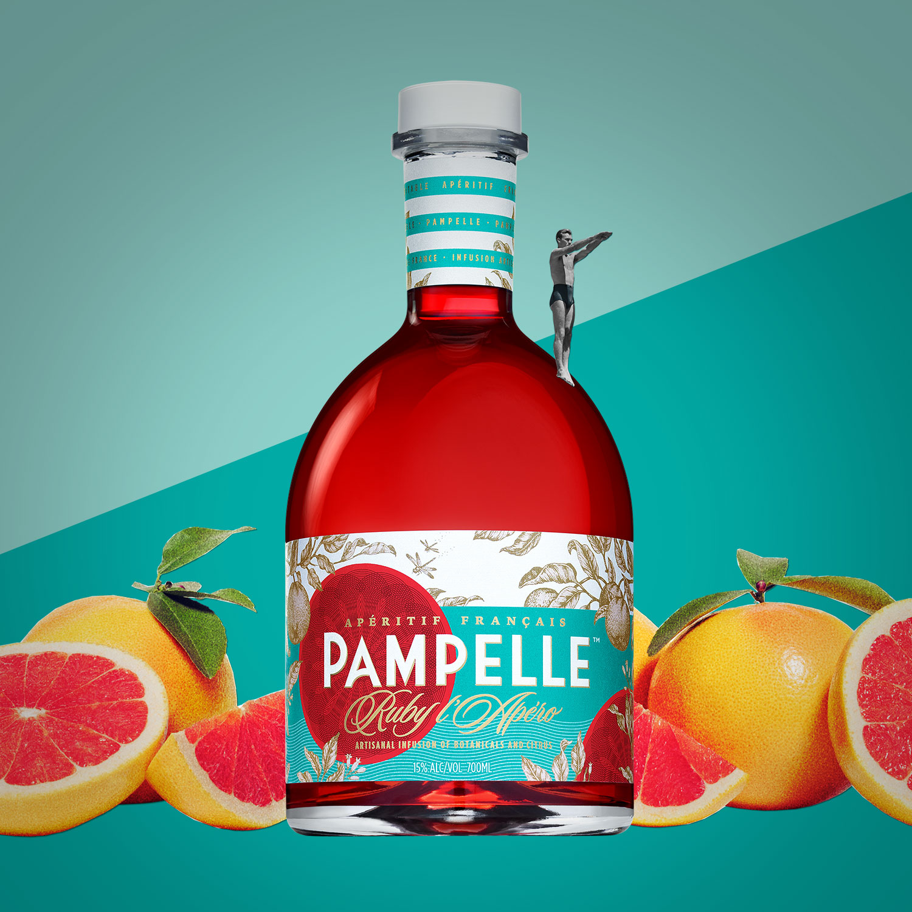

A Taste of France
French food and cooking are generally considered the backbone of many cuisines across the Western world. A beloved tradition, the French Gastronomic meal is classified as a UNESCO intangible cultural heritage of humanity.
L'Álcool

As a gesture of appreciation to the country that has served us an esteemed and lofty selection of delicious and decadent beverages, Pampelle has drawn up a modest list of some of France’s most famous alcoholic productions.